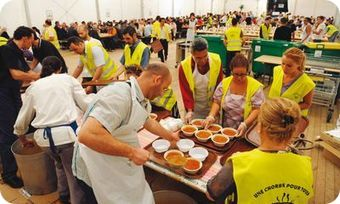
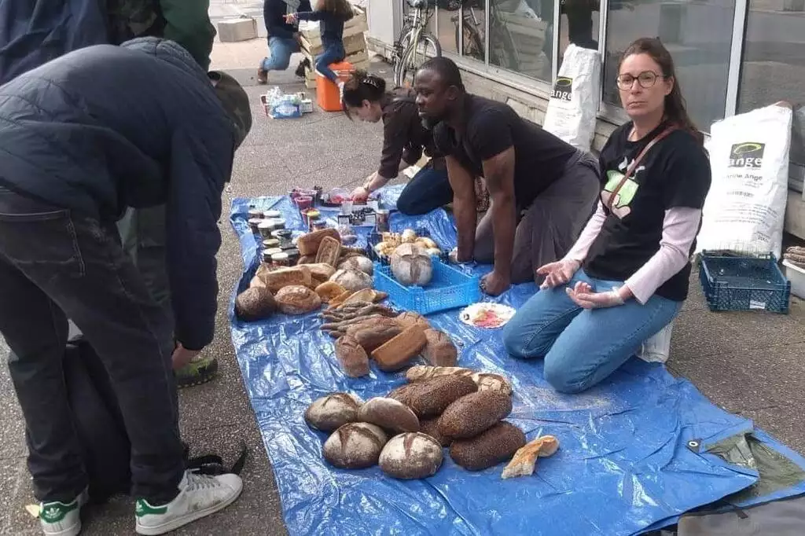
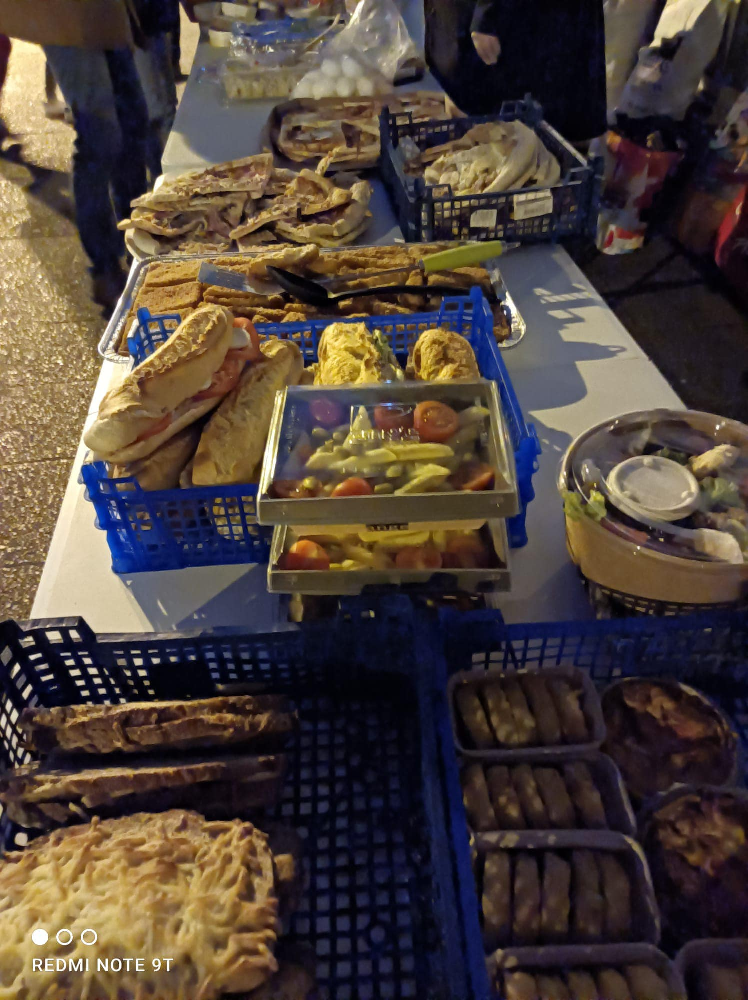

Qui sommes-nous ?
La solidarité alimentaire a besoin de vous, Un camion pour un Repas Pour Tous ! L’association « Un Repas Pour Tous », oeuvrant pour les nécessiteux au Mans et communes aux alentours, par la collecte et la distribution de repas aux plus démunis a célébré ses 10 ans en novembre dernier, cependant nos besoins en logistiques deviennent de plus en plus pressants.
Toujours plus de familles et de personnes seules à la rue dans le besoin, et notre association n’a toujours pas de local ni de véhicule afin de transporter les denrées récoltées, cuisinées et à distribuer. Pourtant nos cinquante bénévoles et nos partenaires répondent toujours présents quand il s’agit de nourrir les plus démunis et éviter le gaspillage alimentaire et nous les remercions.
Nos actions
Distribution de repas chaud le premier Samedi de chaque mois :
Distribution de denrées alimentaires chaque dimanche :
 